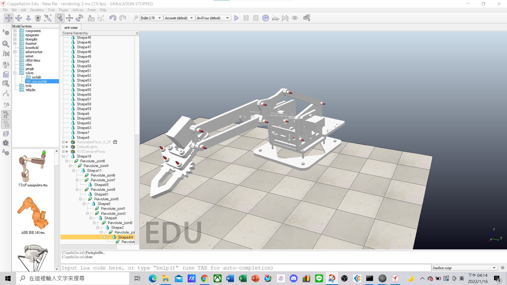

W14 <<
Previous Next >> 期末考試
期末總結
這學期學到很多軟件,有NX,solvespace和WINK以及coppeliasim模擬,這些軟體大致上都學到了一點基礎
但由於NX和solvespace的組合零件還是很不清楚要怎麼操作所以我改用我比較拿手的inventor來做組合
--------------------------------------------------
NX全總結
solvespace全總結
對coppeliasim的操作有更加了解，但內部原理還不熟，所以在設定的部分花了很多時間，這次遇到的問題就是剩夾爪軸模擬跑不出來，在影片裡有示範做的成果和遇到的問題
2022.1.03期末考
心得:這次又更加了解繪圖軟體和模擬器
期末考試
第一階段: 請將自己所完成繪製的 meArm Robot 零件與組立檔案畫面呈現在網頁中, 並將所有零件與組立檔案壓縮成"學號_final.zip" 送到個人的 @gm 帳號 GDrive, 並將連結轉為公開下載. (若採用 Onshape 請將零組件繪圖連結設為公開分享後, 放入頁面).
meArm Robot 零件與組立檔下載
https://drive.google.com/drive/folders/1zMg0VILd8BzripKet9vsVBXiAWrgx3zY?usp=sharing
因為還不清楚NX和slov的組合怎麼搞，因為時間的關係我將NX畫的零件轉檔到個人拿手的inventor來做
組合來增加效率。

第二階段: 請修改第一階段個人所完成的 meArm 組立檔案, 將兩側連桿機構互換, 亦即將帶有三角形連桿的機構與另一方機構互相對調. 完成後, 請在網頁中呈現所完成的組立圖畫面, 並將零組件檔案壓縮成"學號_final_stage2.zip" 送到個人的 @gm 帳號 GDrive, 並將連結轉為公開下載. (若採用 Onshape 請將零組件繪圖連結設為公開分享後, 放入頁面).
meArm 零件與組立檔下載
https://drive.google.com/drive/folders/119CcOJsjAthu5clJ5zdIbSCk1p_dw6Lc?usp=sharing


第三階段: 請將第二階段新完成的 meArm 零組件轉入 CoppeliaSim 後, 利用 Slider 控制其中的各轉動軸, 完成後請以 Wink 影片呈現製作過程, 並將"學號_final.ttt" 檔案壓縮為"學號_final_ttt.zip" 送到個人的 @gm 帳號 GDrive, 並將連結轉為公開下載.
模擬檔下載
https://drive.google.com/drive/folders/1W3VjDhMm4-DM6GfHXymJeE5cEyMOCWyG?usp=sharing
因先前已有使用老師給的未編排的組合檔來做編排模擬，但目前自己的組合件匯入模擬器後錯誤不斷還邊不太出來，所以此wink先以先前已編好的來做講解過程

HW3-1 AND -2
1. TinkerCAD

TinkerCAD是Autodesk公司所推出，面向初學者的線上3D模型設計應用程式。該軟體使用直觀的塊狀建築概念，你可選擇基本形狀，再從中開發模型。
這個線上軟體有提供包含數百萬個模型檔的資料庫，還可直接連接協力廠商完成製造服務。這款軟體操作簡單，因功能較為基礎，可能會有一些設計功能上的限制，但對於初學者學習和了解3D建模來說已經足夠。
2. FreeCAD

FreeCAD是個完全免費的參數化3D建模工具，它是一個開源軟體，你能夠運用它設計任何尺寸的物體。元件參數化使它更容易被編輯，可以儲存模型的更改歷程。
這款軟體不是用來設計專業及精密的機械結構，通常會被拿來做為培訓軟體使用。提供的功能也相對較為基本，但對於沒有CAD設計經驗的使用者來說十分友好。
3. BlocksCAD

這個3D CAD軟體也是專門用於培訓，它是為專業的OpenSCAD培訓而開發的基礎版。開發物件及轉換命令均由色塊表示，看起來有點像是樂高積木。
另外，BlocksCAD的程式碼與OpenSCAD的程式碼完全相容，你可以在BlocksCAD中創建模型後，再用OpenSCAD做潤色。輸出格式可以是OpenSCAD或STL。順帶一提，BlocksCAD有個Youtube 3D建模教學頻道，不過是英文的就是了。
4. Creo CAD

Creo CAD是產品設計領域的龍頭，由Parametric技術公司在30多年前開發出來的軟體。它有著熱分析、結構、運動、參數化、自由表面生成和直接建模等許多功能，支援建模尺寸計算。
總而言之，它是這個領域的首選工具軟體。最新的Creo 5.0版本發佈於2018年，無論是使用者介面與操作方面與之前版本比都有優化，有提供30天免費試用。
5. Fusion 360

Fusion 360是一款雲端CAD應用程式，它的獨特之處在於，複雜專案可以團隊成員一起共同開發編輯。Fusion 360還有一個優勢就是它能儲存模型的開發歷史。
它還有眾多的功能，包括自由曲面、實體和網格建模等。付費方式為月費，定期會有功能更新，可在多個平臺上運行，不受地理位置限制，任何地方只要有電腦和網路都可登錄使用。
在過去兩年中Fusion 360變得更加受歡迎，而且用戶數量也出現飛躍增長。這應該歸功於良好的使用者介面及專業功能，使它成為3D模型設計的新選擇之一。
6. Solidworks

它由達梭公司開發的CAD軟體，也是經常被專業的機構工程師所使用。同時它也是基於參數的CAD軟體。
該軟體包括設計驗證、反向工程等特殊功能。更多被用於工業設計，它是個相當實用的軟體。最大特點是它與許多同類軟體不同，不是通過傾斜的平面結構來模仿曲線，Solidworks使用NURBS系統創建有著詳細的曲率的曲線。
此外，它還使用尺寸草圖來代替多邊形建模，方便調整尺寸。但也有個缺點，導入STL檔的能力有限，若用戶有編輯STL檔的需要，則可能需要額外的輔助程式。
7. AutoCAD

AutoCAD軟體是AutoDesk在1982年開發出來的軟體，它是最早出現在市面上的CAD軟體之一。
雖然AutoCAD很受歡迎，但在3D列印領域，它的受歡迎程度沒有其他軟體來得高。許多使用者認為它的2D繪圖功能強大，但在3D建模方面則有待提高。
這款軟體針對具有機械設計經驗的專業人士推出，AutoCAD創建的三維模型可以方便轉換為STL檔並用於3D列印。另外，2010年AutoCAD發佈了一個行動版本叫做AutoCAD 360。
8. CATIA

CATIA是達梭公司開發出來的高階CAD軟體，準確地來說它不僅是CAD軟體，還被用於CAM(電腦輔助製造)、CAE(電腦輔助工程)等，由達梭系統的3DEXPERIENCE驅動。
CATIA通過整合產品設計和開發過程來創新產品，使它可以被用於產品開發過程的各個階段，因此，該軟體對設計師、工程師和系統建模師都非常好用。CATIA提供的3D設計環境，使團隊能夠更直覺的分享產品設計，並一起合作參與產品開發。
9. OpenSCAD

OpenSCAD是款免費開源的CAD軟體，能夠製作出實體3D模型。它適合有一定機械設計經驗的人使用。
此外，該款軟體對工程師很友善，很適合已被參數化的簡單模型。因為該軟體是基於電腦程式語言設計，所以它不適合完全不懂程式設計的用戶使用。
10. Rhino3D

這是一套十分商業化的CAD軟體，該程式使用一個精確的數學模型，稱為NURB，允許以各種方式操作點、曲線、網格、表面、實體等。
Rhino3D的優勢在於它廣泛的設計功能，在創建複雜的三維模型方面有著極大的通用性。然而，許多使用者反映該軟體入門較難，且入門後會需要大量的練習，因此可能不適合初學者使用。
HW3-2
1.Generative Design介紹:
Generative Design 又名為衍生(生成)式設計,其概念是指設計者可以不定是人,可以是人工智能或軟體,所以其算是現在cad軟體的下一個挑戰的領域,他能幫助設計者減少製造成本支出,並解決複雜的設計問題跟優化性能,而現在設計工程師對於計算軟體的應用越來越依賴,所以將思考較為簡單的問題交給計算機去處理,讓設計工程師們更注重在創新和較高層次的問題解決,並且在電腦提出問題,時能夠一起學習問題的錯誤,並與計算軟體一起去探索解決問題的方法,而現在衍生式設計較具代表性的軟體有:Fusion 360,Creo,Nx...等,上述軟體都是在業界中非常知名並應用廣泛的衍生式設計軟體
2.Deep Reinforcement Learning介紹:
Deep Reinforcement Learning又名為深度強化學習, 是在計算軟件或人工智能中增加其學習能力,出現問題時能夠記下錯誤,並讓計算模組判斷出更好的決策,讓下次再碰到相關的問題時,能夠不發生錯誤的完成任務,舉最好的列子就是Google開發的智能軟體AlphaGo打敗了世界棋王,其實AlphaGo之所以能打敗人類棋手就是在其計算軟體中增加了深度強化學習這項功能,並透過讓AlphaGo重複的犯錯與記住此次錯誤,並計算出最好的決策,而就是這樣的日積月累,讓AlphaGo在誕生到打敗世界棋王,僅僅花了二年左右.
3.我對3D軟體未來趨勢的看法:
3D列印又稱積層製造，是一種以數位檔案為基礎，運用塑料、液態、尼龍/金屬粉末等可粘合材料，通過逐層列印的方式，來構造物體的加法製造技術。它不僅拓展了客戶的設計空間，更滿足了客戶對於定製化產品的需求，在工業製造領域，大有作為。
Edward分析：「我們認為3D列印是一種分布式生產的解決方案，他可能在未來會顛覆傳統的供應鏈。自工業革命以來，機器大工業生產嚴重依賴供應鏈，因此，世界各國的聯繫越來越緊密，推進了全球化的進程。直到20世紀80年代，由於國際物流水平的不斷進步，美國和歐洲一些國家的工廠索性遷移到離原材料產地更近，勞動力更便宜的地方，一開始是日韓、然後是我們國家，現在可以看到企業不斷將工廠遷移到越南、印尼。」
「傳統集中式的工廠規劃，前置的工藝，工裝夾具設計繁雜，經過多台設備步驟工序的倉儲、物流、供應鏈非常複雜。應用3D列印技術，供應鏈系統可以對單個需求做出生產配送的響應。從傳統「以產定銷」的轉變成「以銷定產」，生產的指令完全由終端用戶個人下達，跳過了SOP, 工裝夾具設計、刀具工具設計等環節，從而大幅簡化供應鏈。設想一下，如果我想要個空氣凈化器，只需要以低價格購買空氣凈化器的設計文件，3D列印就可以現場列印出來，這樣，簡化了工序工藝，倉儲物流，整個供應鏈都會發生改變。」Edward進一步補充道。
W14 <<
Previous Next >> 期末考試